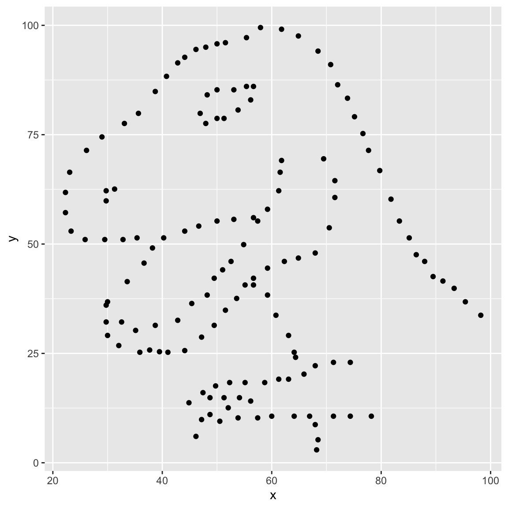

R ggplot
library(datasauRus)
datasaurus_dozen |>
filter(dataset == 'dino') |>
ggplot(aes(x = x, y = y)) +
geom_point() +
#facet_wrap(.~dataset) +
theme(
strip.text = element_text(size = 18)
)
1주차
엑셀은 장점이 많고 데이터 분석의 토대가 되는 대체불가능한 데이터 분석 도구입니다.
그러나 분석의 규모가 커지고 복잡도가 높아질수록 아래와 같은 한계에 직면하게 됩니다.
대용량 데이터 처리 불가
- 약 100만 개 이상의 데이터는 파일에 담을 수 없어 `빅 데이터`, `로그 데이터` 처리에 한계가 있습니다.
연산 속도 및 성능 저하
- 함수가 참조하는 값이 많아질수록 처리 속도가 기하급수적으로 지연됩니다
분석 과정의 휘발성과 낮은 재현성
- 분석 과정이 대화상자, 메뉴 클릭 등에 의존적이라 분석 과정이 휘발돼 재현성이 떨어집니다
분석 품질의 편차와 검증의 어려움
- 재현성이 떨어지므로 개인의 역량에 따라 분석 품질에 편차가 발생합니다.
업무 자동화 및 확장성의 한계
- 결과 검증도 어려워 자동화할수 있는 부분도 제한적입니다.
데이터를 다루는 방식에는 크게 GUI와 CLI가 있습니다.
| Graphic User Interface (GUI) | Command Line Interface (CLI) | |
|---|---|---|
| 정의 | 사용자가 화면에 있는 아이콘, 메뉴, 버튼 등 그래픽 요소를 마우스로 클릭해 동작시키는 방식 | 그래픽 화면 없이, 텍스트 형태의 명령어(Code)를직접 키보드로 타이핑해 동작시키는 방식 |
| 대표 예시 | Excel(엑셀), 웹 브라우저(크롬/사파리), 스마트폰 앱 등 |
Windows의 명령 프롬프트(CMD), R, Python 등 |
| 성능 | 그래픽을 화면에 띄워야 하므로 컴퓨터의 메모리(RAM)와 그래픽 자원을 상대적으로 더 많이 소모함 | 명령어를 순서대로 적어둔 스크립트(code)에 따라 실행함으로 연산 처리 속도가 상대적으로 매우 빠름 |
| 자동화 | 매번 마우스로 클릭해야 하므로, 수백 개의 파일을 동시에 처리하는 등의 반복 작업을 자동화하기 어려움 | 복잡한 작업도 순서대로 동작하는 코드를 활용해 언제든 다시 실행할 수 있어 자동화에 적합함 |
단순히 “속도가 빠르다”거나 “반복 작업을 줄여준다”는 성능의 차이보다 더 중요한 본질입니다
| 막대 그래프 |  |
| 분산형 그래프 |  |
어떤 의미인지 직관적으로 이해하기 어려울뿐더러 무의식적으로 시계열(시간순서대로) 접근하게 됩니다
차트를 분산형으로 변경해도 x축과 y축을 엑셀이 자동으로 설정하므로, 보여지는 모습에서 의미를 더듬어가야 합니다.
library(datasauRus)
datasaurus_dozen |>
filter(dataset == 'dino') |>
ggplot(aes(x = x, y = y)) +
geom_point() +
#facet_wrap(.~dataset) +
theme(
strip.text = element_text(size = 18)
)
기본적으로 보여주는 기본값이 없기 때문에 처음엔 아무것도 보이지 않지만 이것은 틀에 갇히지 않는다는 의미입니다.
보이는 것을 보는 것을 넘어, 무엇을 볼 것인지 탐색하는 높은 자유도가 보장됩니다.
데이터의 구조와 구성, 분포부터 살펴보는 ’탐색적 데이터 분석’이 데이터 과학 분야에서 발전한 이유이기도 합니다.
엑셀은 장점이 많고 데이터 분석의 토대가 되는 대체불가능한 데이터 분석 도구입니다.
하지만 일정 수준 이상의 데이터 분석 역량은 ’엑셀’보다 더 나은 성능과 자유도 높은 분석 도구를 필요로합니다.
우리가 7주동안 배우려는 ’R’이 여기에 가장 적합한 도구입니다
🔗 홈페이지

끝.